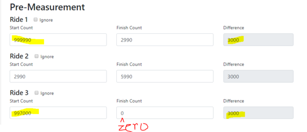
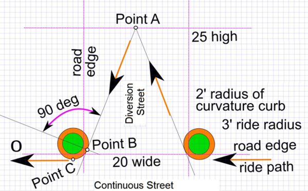

I received the attached email from a band of crooks. I know that the email address came from certifiedroadraces.com because I use that name nowhere else. Maybe someone can look at this?
Scam from hacked certifiedroadraces.com
I got one of those too, although I use that email address for other things.
Pete, what an amazing coincidence that 2 measurer from CT would have a rich, long-lost relative pass away at the same time! How are you going to spend your inheritance?
I also received that great opportunity to get rich.
Got one also.
The list of measurers with email addresses and phone numbers is public. No hacking required to get this info.
It was public in the previous system as well. If we want this as a resource for race directors to find measurers, there is no choice but to make it public.
I understand that the list of measurers was public. However I found it suspicious that the user name that I only use for the certifiedroadraces.com was in the junk email I received. That user name is not only not the RRTC username I use, but is mis-formated and was mis-formated in the junk email. I, like all of you have a delete key. I thought it strangely coincidental that a hack occurred so shortly after certifiedroadraces.com went live and used data from only that database.
Certifiedroadraces account holders who do not want their contact info shown on the Measurers Page can do the following:
In your account, go to Account Settings and select "No, do not show my information to the public."

An account holder who wants to delete their account can do the following:
In your account, go to Account Settings and click on "Delete my Account"

Thanks all.
On the public-facing Measurers page, icons have been inserted for the text of phone numbers and email addresses. Click on the icon to create and mail or obtain the phone number
There are still many, I would say most, names in New Jersey that have never even measured a course. Example, Doug Rice, a wonderful guy who owns a timing company and has hired me numerous times, doesn’t know the first thing about course measurement. Should this be rectified?
Jack - What does your post have to do with this topic? I suggest you begin a new topic labeled with your specific concern. Otherwise it gets lost amid a concern that irrelevant to yours.
You’re right. My apologies.
Jack, I raised that concern in the following post.